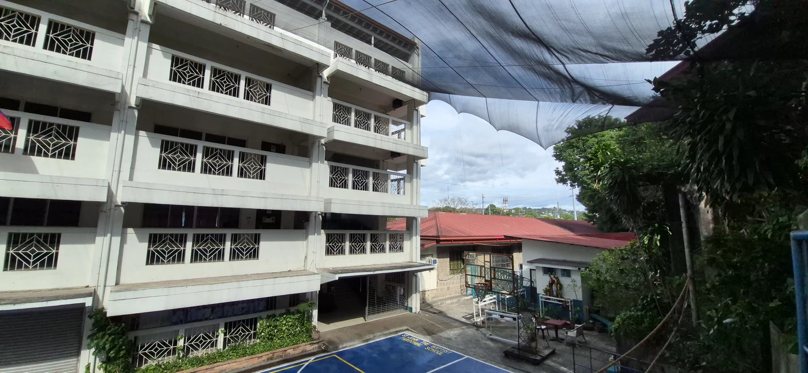
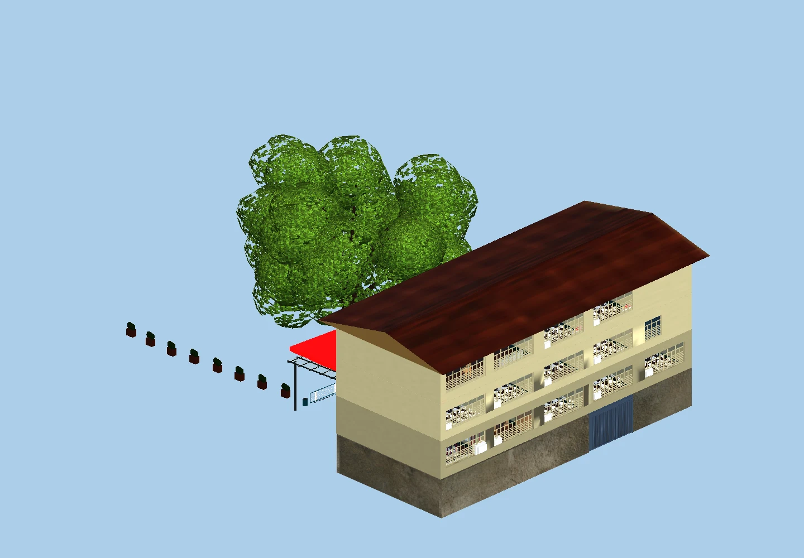
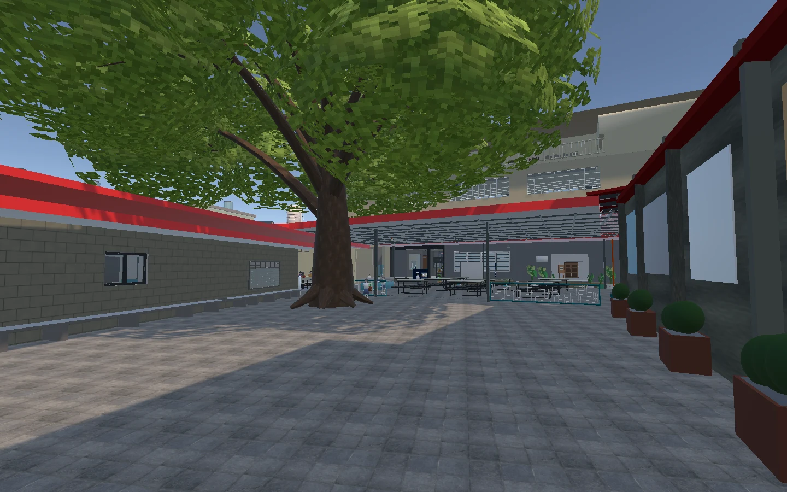
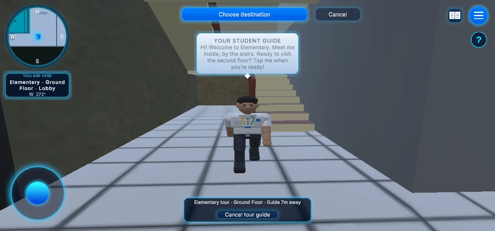
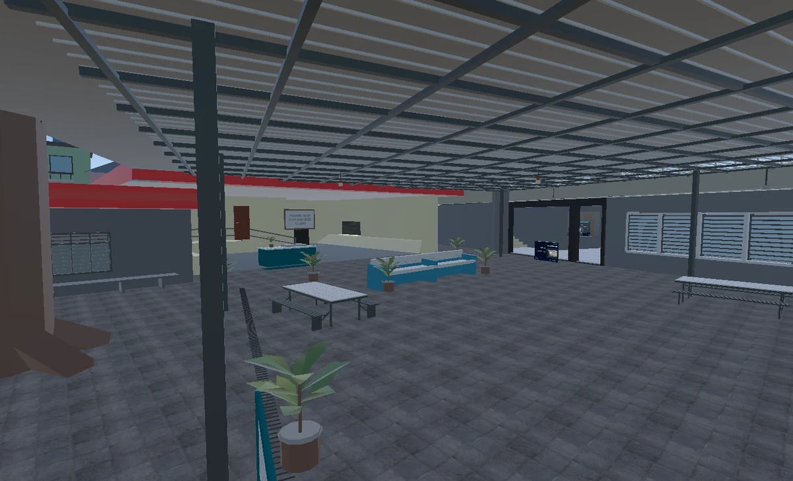
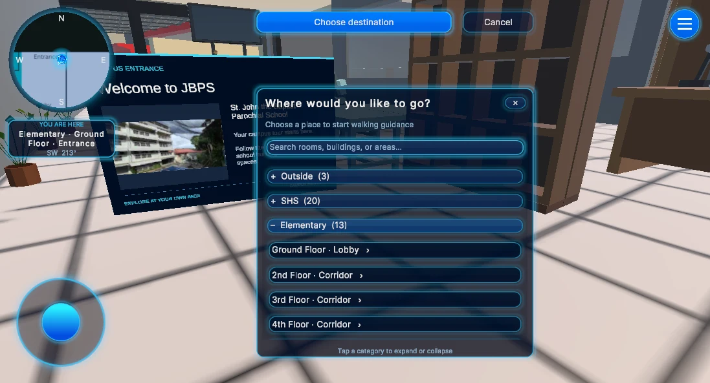

01BUILDING MODEL
Elementary
Explore the building, floors and rooms.
Download PNGA NEW WAY TO KNOW YOUR SCHOOL
Walk the halls. Find your next classroom. See a whole building on your table. Meet VirtuGuide SJBP, your guide to St. John the Baptist Parochial School.
A mobile virtual tour + augmented reality experience.

ST. JOHN THE BAPTIST PAROCHIAL SCHOOL THE CAMPUS BEHIND THE EXPERIENCE
01 / EXPLORE IN AR
02 / WALK THE CAMPUSA LOOK INSIDE THE APP
Meet your guide, explore shared spaces and find your way around. Screenshots from the virtual campus tour.

Explore with your student tour guide.

Visit the canteen and familiar school spaces.

Choose a destination and follow your route.
01 / YOUR AR STARTING POINT
Save a marker, display it on another screen or print it, then scan it in the app’s AR mode.
Download all 3 markersExplore the building, floors and rooms.
Download PNGTake a closer look at the preschool.
Download PNGDiscover classrooms and learning spaces.
Download PNGA little tip for a better scan. Keep the entire picture visible, flat and well lit. Avoid glare or folding. For printing, use the original PNG at 17 × 17 cm. Floor and room exploration is available on the three school buildings.
02 / READY WHEN YOU ARE
A few small steps and you’re on your way. The app’s tutorial can guide you through the rest.
Download the Android APK below. Open the file and follow your phone’s installation prompts.
Choose Virtual Tour to walk around, or AR to see school buildings in your surroundings.
In AR, allow camera access and scan a marker. Or choose Without Marker, find the ground and tap Construct.
Explore rooms, separate floors or meet your guide. Reopen Tutorial whenever you need a hand.
YOUR NEXT LOOK AROUND STARTS HERE
Download VirtuGuide SJBP for Android and start exploring.
Explore restored preschool and library details, scan again after Reset AR, and use lighter AR and virtual-campus models. Older phones get lighter starting settings, and phones without camera AR can open Virtual Tour. Includes automatic quality adjustments when supported phones get hot.
Download Android APK Release notes on GitHub ↗October 25, 2026 · v1.0.11 alpha · 307 MB APK · Android 8+ · 32-bit + 64-bit ARM
Checking GitHub downloads…
APK downloads across public releases, not unique visitors. GitHub totals may take a moment to update.GOOD TO KNOW
No. You can display a marker on a second phone, tablet or computer. Keep it still and avoid screen glare. You can also use Without Marker for Elementary, Preschool and SHS.
Meet the student guide in the virtual tour and start with Elementary. Finish the tour and return with your guide to unlock Preschool, then Senior High School. Your progress is saved, and completed tours can be replayed. Tap a room popup or the guide’s Room overview button to read details and browse real campus photos. Photos illustrate similar school spaces; they may not show the exact room.
Swipe up on a building to separate its floors. Continue upward to open more space, then swipe down to focus on a floor. Swipe down for the next floor and up for the previous floor; the selection loops between the first and last floors. Smaller neighboring floors stay visible with extra space, and the roof hides while browsing. The floor heading shows your current selection. Use All floors or Exit to return.
Move closer and face a public room to open its information card automatically; move away to close it. Pinch on the card to make it smaller or spread two fingers to enlarge it. The return arrow restores normal size, and X closes the card. Tap the padlock to lock the building in place or unlock it to follow you. Reset AR starts a fresh scan. The ground grid stays visible for ten seconds after placement, then fades.
This release supports Android 8.0 or later on compatible 32-bit and 64-bit ARM phones. Weaker phones start with Cooler phone settings: 30 FPS, fewer students and no real-time shadows. You can change graphics settings in the app. Camera AR still needs an ARCore-compatible device; if it is unavailable, tap Explore Virtual Tour. Performance varies by phone.
Use Cooler phone mode in Settings for a lighter experience. On supported Android phones, the app also lowers graphics quality when the system reports heat, then gradually restores it after cooling. Long sessions can still warm your phone.
The app is distributed through GitHub Releases rather than an app store. Your phone may ask you to allow installation from your browser or file manager. Download the APK using the link on this page.